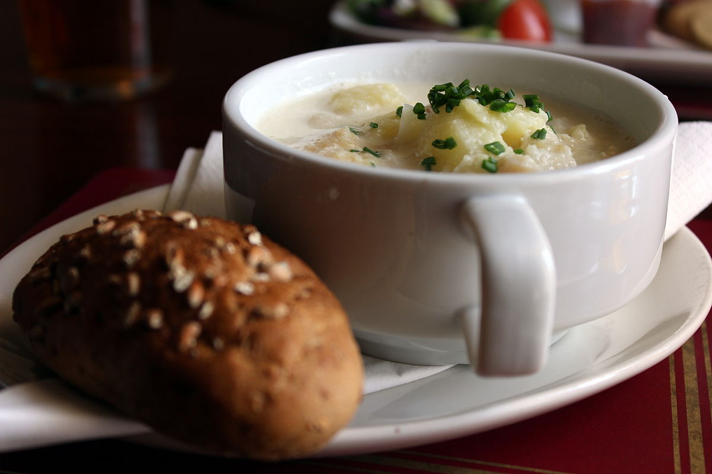

Cullen Skink

Description
Cullen Skink is a traditional Scottish soup made by simmering smoked haddock with cream, potatoes and onions. It originated from the town of Cullen, Moray (North East Scotland).
Ingredients
- 1 tbsp unsalted butter
- 1 medium onion
- 400g medium potatoes (about 2), peeled and cut into 1cm cubes
- 250g smoked haddock (ideally finnan haddie)
- 250ml whole milk
- 1/2 small bunch parsley or chives, finely chopped
Method
- Melt the butter in a saucepan over a medium heat, then add the onion and fry for 5-8 mins until translucent but not browned. Add the potatoes and 300ml water and bring to the boil. Reduce the heat slightly and simmer for 10-15 mins.
- Meanwhile, put the haddock in another pan and cover with the the milk. Cook gently for 5 mins, or until just tender. Remove the haddock from the milk with a slotted spoon (reserving the milk), transfer to a plate and leave to cool slightly. When cool enough to touch, flake into large pieces, removing any bones.
- Put the reserved milk and flaked haddock in the pan with the potato mixture and cook for another 5 mins. Season and sprinkle over the parsley to serve.
Home